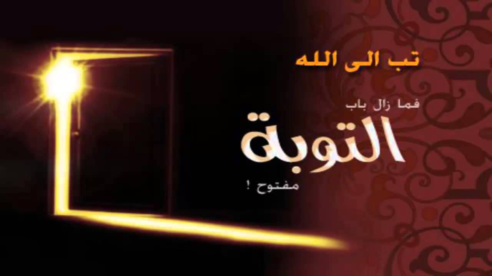
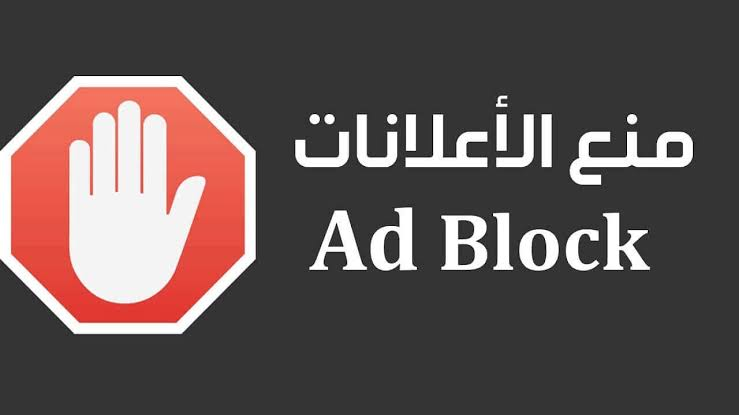
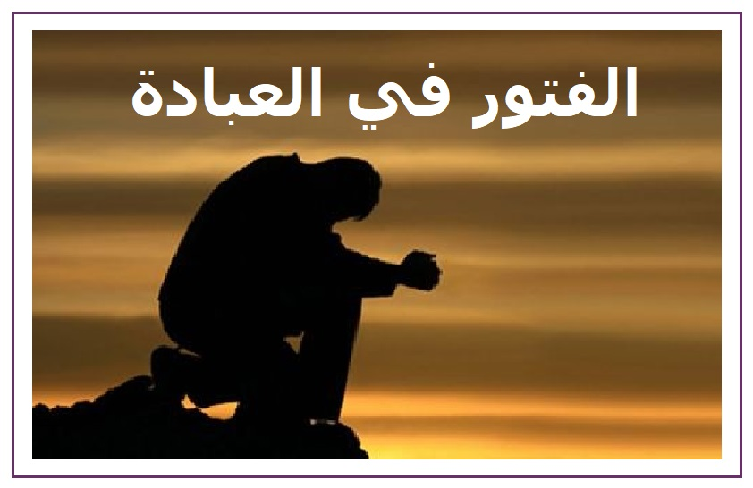

كيف تحافظ على وردك اليومي من الأذكار حتى في أكثر الأيام انشغالاً؟
اكتشف 5 طرق عملية للحفاظ على أذكار الصباح والمساء حتى لو لم يكن لديك وقت، وكيف يمكن للتكنولوجيا مساعدتك.
اقرأ المزيد ←مقالات إيمانية ملهمة، وأفكار عملية لحياة أكثر قربًا من الله.
اكتشف 5 طرق عملية للحفاظ على أذكار الصباح والمساء حتى لو لم يكن لديك وقت، وكيف يمكن للتكنولوجيا مساعدتك.
اقرأ المزيد ←اكتشف أسرارًا قرآنية قد تغير نظرتك للحياة والرزق والنجاح. السر الثالث قد يكون نقطة تحول حقيقية في يومك.
اقرأ المزيد ←اكتشف 3 علامات تدل على قبول الصلاة وتأثيرها في حياتك. ليست مجرد حركات، بل هي اتصال يغير كل شيء.
اقرأ المزيد ←ندعو وندعو، ولكن قد لا نرى الإجابة. اكتشف الخطأ الشائع الذي قد يكون السبب، وتعلم أسرار الدعاء المستجاب.
اقرأ المزيد ←سؤال محير في عصرنا. اكتشف الضوابط الشرعية التي تفرق بين الحلال والحرام في الترفيه.
اقرأ المزيد ←إذا كنت تسأل 'لماذا تحدث لي أمور سيئة رغم أني أعبد الله؟'، فهذا المقال لك.
اقرأ المزيد ←
التوبةمهما كان ذنبك عظيمًا، رحمة الله أعظم. اكتشف لماذا لا يجب أن تيأس من رحمة الله.
اقرأ المزيد ←
تقني4 خطوات عملية وفعالة لتنظيف تجربتك الرقمية وحماية نفسك من الإعلانات غير اللائقة.
اقرأ المزيد ←
الصلاة5 خطوات عملية لاستعادة لذة الطاعة والخشوع في الصلاة وقراءة القرآن.
اقرأ المزيد ←اكتشفي الإجابة الواضحة والفرق بين شروط صحة القراءة وآدابها، لتتلذذي بقراءة القرآن في كل وقت.
اقرأ المزيد ←حمّل تطبيق Zad Bono الآن واستمتع بكل المميزات في مكان واحد
📥 حمل التطبيق الآن